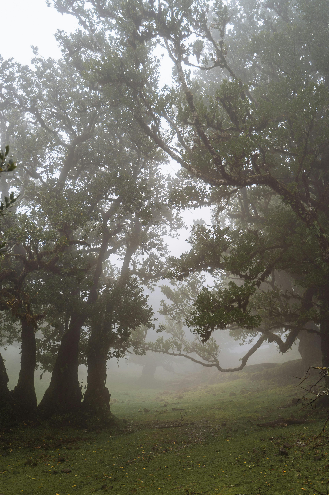
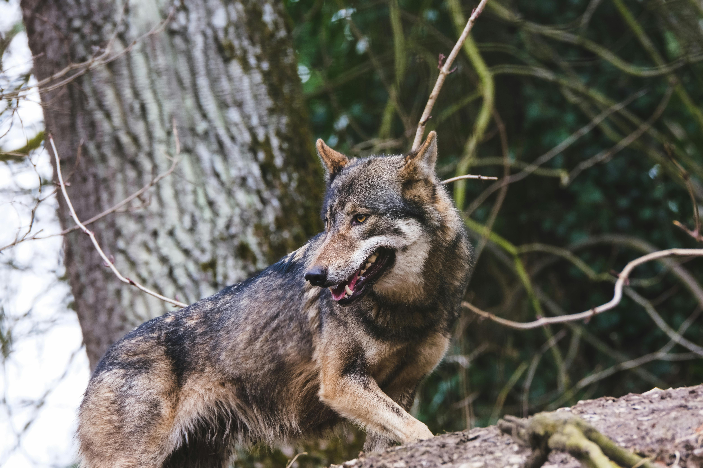

Capítulo 1: El Camino al Bosque

Había una vez una niña muy buena que siempre llevaba una caperuza de color rojo. Su madre le pidió que llevara una cesta con pasteles a su abuelita, que vivía al otro lado del bosque.
"No te apartes del camino," le había advertido su madre. Pero la curiosidad de Caperucita era grande, y el bosque guardaba muchos secretos por descubrir.
Caperucita Roja se despidió de su madre y comenzó su viaje. El sol brillaba entre los árboles, y el camino parecía seguro y lleno de flores silvestres.
Siguiente capítuloCapítulo 2: El encuentro con el lobo

Mientras caminaba por el bosque, Caperucita escuchó una voz entre los árboles. Un lobo grande y astuto apareció en el camino con una sonrisa amable.
"¿A dónde vas, pequeña?" preguntó el lobo. "Voy a casa de mi abuelita, que está al otro lado del bosque," respondió Caperucita sin sospechar nada.
El lobo, que ya tenía un plan en mente, le sugirió que recogiera flores para su abuelita. Mientras Caperucita se entretenía, el lobo corrió por un atajo hacia la casa de la abuelita.
Volver al índice